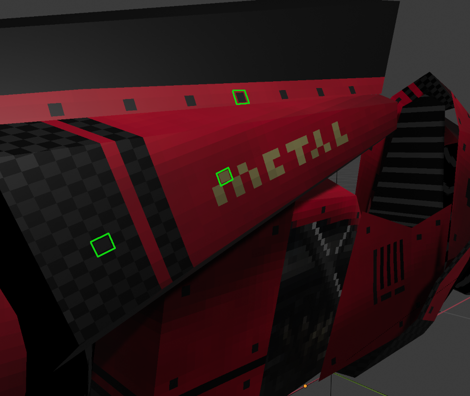

Once you have a UV map, you can begin texturing. This is where you'll do the actual "coloring" for your 3D model.
The first step is deciding on a resolution for the texture. I used relatively low resolution textures, often 128x128.
The texture resolution will impact the size of texels (texture pixel) in the final product.

As was talked about in the UVs section, there are multiple kinds of textures or maps you can create for an object. Most are used for changing how the surface interacts with light- how bright/dark or shiny it is. With my restricted art style, I didn't feel that anything other than an albedo map was necessary for most objects.
I used GIMP and aesprite for creating the textures. It mostly boiled down to experimenting with brushes and effects, occasionally involving some photo bashing, like with the engine on the bike.
TESTING TESTING